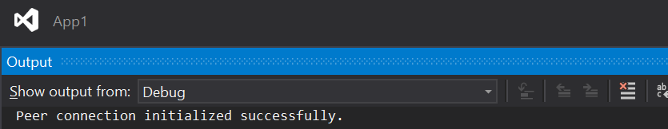

Creating a peer connection
Next, we create a PeerConnection object which encapsulates the connection to the remote peer.
The PeerConnection class is marked as disposable, so must be disposed to clean-up the native resources. Failing to do so generally lead to crashes or hangs, as the internal WebRTC threads are not stopped and therefore the native DLL cannot be unloaded. Unlike in the .NET Core tutorial where we build a console application however, here with the XAML framework we cannot easily use the using var construct to rely on the C# compiler to call the Dispose() method for us, because currently the only available method is the OnLoaded() method, and it will terminate and release all its local variable once loading is finished, and before the end of the application. Instead, we need to keep a reference to the PeerConnection instance and call Dispose() explicitly when done with it.
Continue editing the MainPage.xaml.cs file and append the following:
At the top of the
MainPageclass, declare a private variable of typePeerConnection.private PeerConnection _peerConnection;Continue to append to the
OnLoaded()method. First, instantiate the peer connection._peerConnection = new PeerConnection();The
PeerConnectionobject is initally created in an idle state where it cannot be used until initialized with a call toInitializeAsync(). This method takes aPeerConnectionConfigurationobject which allows specifying some options to configure the connection. In this tutorial, most default options are suitable, but we want to specify a STUN server to make sure that the peer connection can connect to the remote peer even if behind a NAT.var config = new PeerConnectionConfiguration { IceServers = new List<IceServer> { new IceServer{ Urls = { "stun:stun.l.google.com:19302" } } } }; await _peerConnection.InitializeAsync(config);In this example we use a free STUN server courtesy of Google. Note that this is fine for testing, but must not be used for production. Also, the ICE server list uses the
List<>generic class, so we need to import theSystem.Collections.Genericmodule with ausingdirective at the top of the file.using System.Collections.Generic;Print a simple message to the debugger to confirm that the peer connection wass initialized. In a real-world application, properly notifying the user of failures is critical, but here for the sake of this tutorial we simply rely on a any exception interrupting the application before the message is printed if an error occur.
Debugger.Log(0, "", "Peer connection initialized successfully.\n");In the
App_Suspending()event handler, add some code to dispose of the peer connection.private void App_Suspending(object sender, SuspendingEventArgs e) { if (_peerConnection != null) { _peerConnection.Close(); _peerConnection.Dispose(); _peerConnection = null; } }
Run the application again; the printed message should appear after some time in the Visual Studio Output window under the Debug section. It can take up to a few seconds to initialize the peer connection, depending on the device.

Next : Adding local media tracks